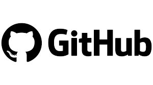

Tools environment git
git

Tentu jelas sekali pasti dibutuhkan Git yang harus terinstall di komputer (PC/Laptop) kita sesuai sistem operasi nya
github

Akun github yang berfungsi sebagai server source code yang kita simpan ke cloud agar source code kita bisa dibuka di banyak perangkat
sourcetree

SourceTree merupakan klein GUI yang digunakan untuk mengakses berbagai layanan Git dan Mecurial, sangat cocok untuk yang tidak terbiasa dengan CLI dan SourceTree merupakan pilihan yang tepat bagi kalian yang tidak terbiasa dengan CLI
Perintah dasar mengoperasikan git
git init
Perintah yang digunakan untuk menginisialisassi repository di folder yang digunakan dan ini langkah awal untuk menggunakan Git
git config --list
Perintah yang digunakan untuk melihat konfigurasi awal yang sudah terpasang dan yang paling sering harus disetting pada konfigurasi email dan username git nya
git status
Perintah yang digunakan untuk mengetahui status file dan secara umum terbagi menjadi 3 status yaitu Untracked, Staging Area, dan Modified
git add .
Perintah yang digunakan untuk memasukan seluruh file ke staging area
git log
Perintah yang digunakan untuk meilhat riwayat commit
git commit
Perintah yang digunakan untuk mencatat perubahan di file sebelumnya ataupun ada membuat file baru
git remote -v dan git remote

Sebelum kita memberikan perintah git remote add origin "https repo kalian" , perintah git remote -v tidak akan muncul
maka pada pertama kita add dulu remote nya baru nanti akan muncul kita sedang berinteraksi dengan server yang sudah kita remote
git push
Perintah yang digunakan untuk mengirim commit local kita ke repository cloud server git kita
git pull
Perintah yang digunakan untuk mengambil commit dari server ke local/server branch kita jika ada perunahan di server yang dibuat oleh branch lain
git clone
Perintah yang digunakan untuk mengcopy repo dari server ke local repo kita